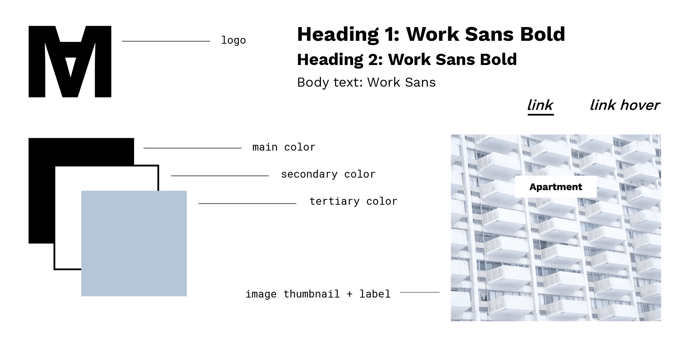
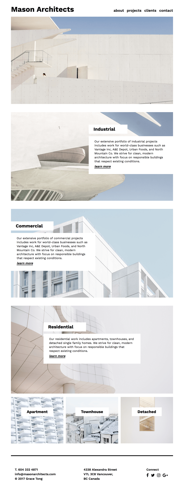

A responsive, one-page scrolling website for Mason Architects, a fictious architecture studio.
HTML | CSS | JQUERY | PHOTOSHOP
To reflect the studio's clean and modern architectural style, the website design is layed out in a way that emphasizes whitespace and minimalist elements. The color palette was selected to give a simple and calm ambience to the site, which is further reflected in the imagery used. Close attention was paid to ensure that the site displays well across multiple screen sizes, and flex was used in the footer for responsive reflowing.
view liveColor Palette
#B6C6D6
#000000
#FFFFF
Style Tile

Layout + Design
